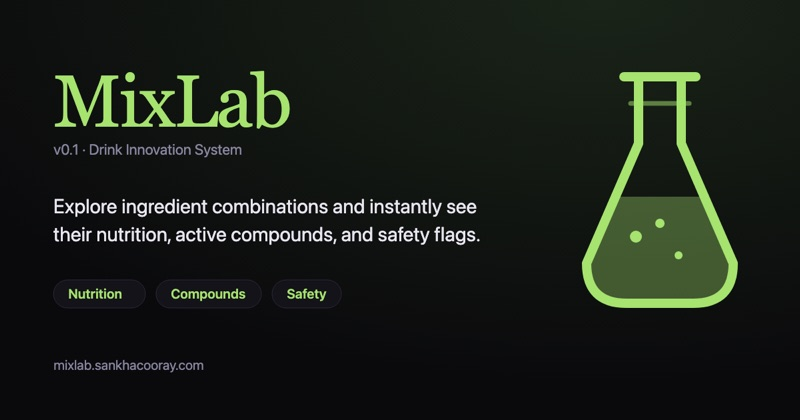
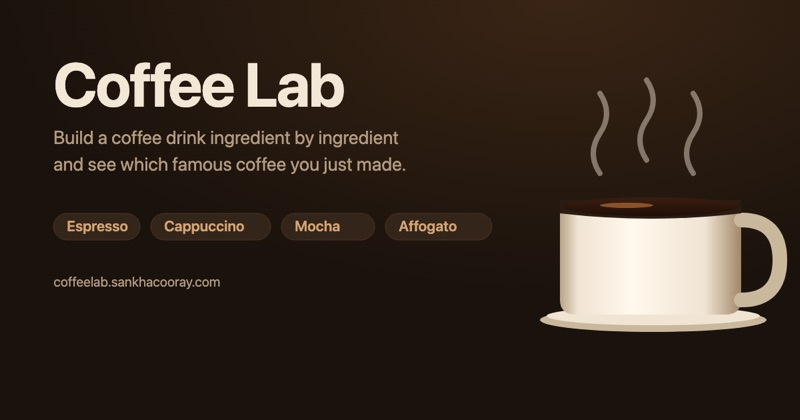
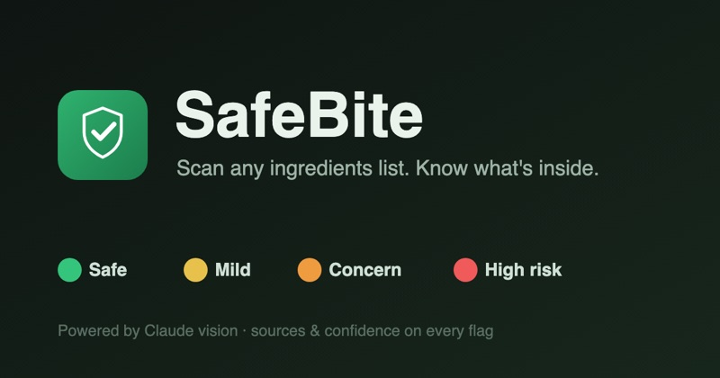
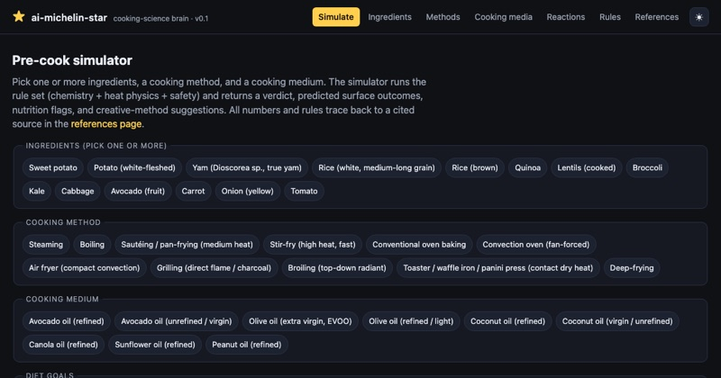

A lens on the kitchen as a laboratory — cocktails and coffee as measured systems, food safety as data, and taste as something you can prototype. Side projects at the edge of nutrition, culinary chemistry, and everyday eating.

Cocktails as measured systems — ratios, dilution, and balance made explicit.
visit →
Brew variables as a controllable surface: dose, ratio, grind, time.
visit →
Food-safety and allergen checks — a client front with an Apps Script backend.

A tasting / recipe playground exploring flavour as something you can compose.